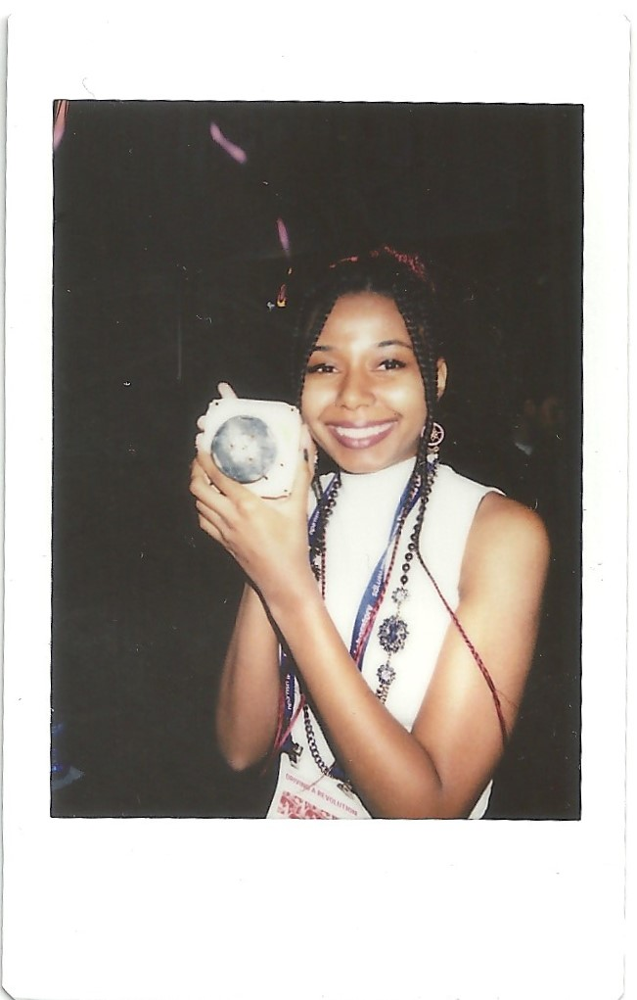

Aerospace Engineering student and former Senator of the National Society of Black Engineers at Western Michigan University. I was involved in many organizations, where I have gained organizational, time management, collaboration, problem solving and leadership skills. I was a member of the American Institute of Aeronautics and Astronautics (AIAA), National Society of Black Engineers (NSBE) , Western Aerospace Launch Initiative (WALI) and Touch Gift Foundation (TGF). I have 3 years of project experience, such as being a Satellite Research Assistant where I completed project review deliverables, such as test documentation, a trade study, and Powerpoint presentation.
I was also a volunteer Tutor and Online Program Coordinator where I helped students pass the Test for Adult Basic Education and helped administrative staff with various tasks, such as onboarding tutors, assisting tutors during class sessions, and managing the program coordinator emails. I also completed monthly attendance tracking sheets and attended meetings as part of an agreement with other educational organizations we are in partnership with, such as the Chinese Mutual Aid Association.